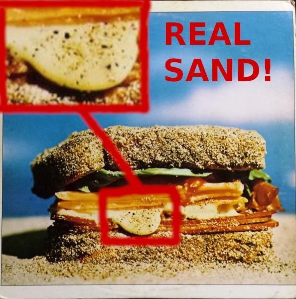

Sandwich | The Original Recipe

Description
Most sandwiches these days don't have even a grain of sand in them. Luckily, this article stays true to the original recipe, so that you can expirience the joy of true and original sandwich.
Why you should add sand to your sandwiches:
✓No GMO or preservatives. 100% natural
✓Contains almost no calories
✓It's free!
Ingridients:
- 2 slices bread
- 50g sand
- 1 slice cheese (optional)
- 1 slice bacon (optional)
Steps:
- Put one slice of bread on the counter
- Cover it in sand with delicacy. You may add optional ingridients as well
- Put two slices together
- Enjoy!